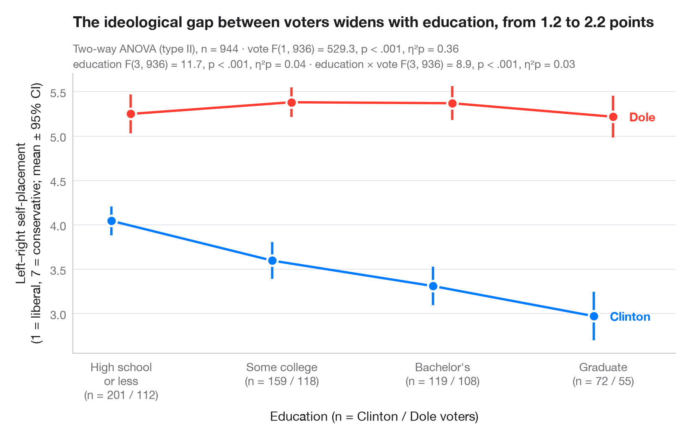

Interaction plot
Group means with 95% confidence intervals for two factors, with a two-way ANOVA.

An interaction plot shows the mean outcome for every combination of two factors: one factor on the x-axis, the other as coloured, slightly dodged lines. Each mean carries its 95% confidence interval. Parallel lines mean the two factors act independently; lines that converge, diverge or cross signal an interaction.
Data are the 944 voters of the 1996 American National Election Study bundled
with statsmodels (sm.datasets.anes96): self-placement on a 7-point
liberal–conservative scale (1 = extremely liberal, 7 = extremely
conservative), by education (the seven survey codes grouped into four
levels) and by presidential vote, Clinton or Dole. The two-way ANOVA (type
II sums of squares) comes from statsmodels.formula.api.ols and
statsmodels.stats.anova.anova_lm, with partial η² for each term; the
intervals use the t distribution.
import matplotlib.pyplot as plt
import numpy as np
import pandas as pd
import statsmodels.api as sm
import statsmodels.formula.api as smf
from scipy import stats
from statsmodels.stats.anova import anova_lm
# Data: left–right self-placement (1–7) by education level and presidential vote
df = sm.datasets.anes96.load_pandas().data
classes = ["High school\nor less", "Some college", "Bachelor's", "Graduate"]
df["educ_level"] = pd.cut(df.educ, [0, 3, 5, 6, 7], labels=classes) # survey codes 1–3, 4–5, 6, 7
df["voter"] = df.vote.map({0: "Clinton", 1: "Dole"})
# Two-way ANOVA with interaction (type II) + partial eta squared
aov = anova_lm(smf.ols("selfLR ~ C(educ_level) * C(voter)", data=df).fit(), typ=2)
ss_res = aov.loc["Residual", "sum_sq"]
aov["eta_p"] = aov.sum_sq / (aov.sum_sq + ss_res)
df_res = int(aov.loc["Residual", "df"])
# Means and t-based 95% CIs per cell
cells = df.groupby(["voter", "educ_level"], observed=True).selfLR.agg(["mean", "sem", "count"])
cells["half"] = cells["sem"] * stats.t.ppf(0.975, cells["count"] - 1)
fig, ax = plt.subplots(figsize=(8, 5))
x = np.arange(len(classes))
for (voter, c, dx) in [("Clinton", "#007AFF", -0.06), ("Dole", "#FF3B30", 0.06)]:
m = cells.loc[voter].reindex(classes)
ax.errorbar(x + dx, m["mean"], yerr=m["half"], color=c, lw=2, capsize=0,
elinewidth=2, marker="o", ms=9, mec="white", mew=1.8, label=voter)
ax.annotate(voter, (x[-1] + dx, m["mean"].iloc[-1]), xytext=(14, 0),
textcoords="offset points", va="center", fontsize=10.5,
fontweight="semibold", color=c)
# Cell sizes under the axis labels
n = cells["count"].unstack(0).reindex(classes)
ax.set_xticks(x, [f"{k}\n(n = {n.loc[k, 'Clinton']} / {n.loc[k, 'Dole']})" for k in classes])
ax.set_xlim(-0.3, len(classes) - 0.55)
ax.set_xlabel("Education (n = Clinton / Dole voters)")
ax.set_ylabel("Left–right self-placement\n(1 = liberal, 7 = conservative; mean ± 95% CI)")
# One "F(df1, df2) = …, p …, η²p = …" string per ANOVA term
stat = {}
for term, label in [("C(educ_level)", "education"), ("C(voter)", "vote"), ("C(educ_level):C(voter)", "education × vote")]:
r = aov.loc[term]
pval = "< .001" if r["PR(>F)"] < .001 else f"= {r['PR(>F)']:.2f}"
stat[label] = f"{label} F({r.df:.0f}, {df_res}) = {r.F:.1f}, p {pval}, η²p = {r.eta_p:.2f}"
gap = cells.loc["Dole", "mean"] - cells.loc["Clinton", "mean"]
ax.set_title(f"The ideological gap between voters widens with education, "
f"from {gap.iloc[0]:.1f} to {gap.iloc[-1]:.1f} points", pad=40)
ax.text(0, 1.075, f"Two-way ANOVA (type II), n = {len(df)} · {stat['vote']}",
transform=ax.transAxes, fontsize=9.5, color="#6E6E73")
ax.text(0, 1.02, f"{stat['education']} · {stat['education × vote']}", transform=ax.transAxes,
fontsize=9.5, color="#6E6E73")
plt.show()
Figures use the optional PyStatlas style: add plt.style.use("pystatlas.mplstyle") to match the look exactly.
Data source
- American National Election Study, 1996. Rosenstone, S. J., Kinder, D. R., Miller, W. E., & the National Election Studies. (2016). ANES 1996 Time Series Study (ICPSR 6896; Version 6) [Data set]. Inter-university Consortium for Political and Social Research. https://doi.org/10.3886/ICPSR06896.v6
Subset of 944 respondents distributed with statsmodels (sm.datasets.anes96); public domain.
The examples illustrate statistical methods. Their titles describe what each figure shows in these particular data — often a small, dated or partial sample — not the author's position on the substantive question. For interpretation, context and data quality, rely on the original sources cited here.
How to cite
PyStatlas is created and maintained by Thierry Warin. If it helped your work, please cite it.
Warin, T. (2026). Interaction plot. In PyStatlas: A Python Gallery of Statistical Graphics for the Social Sciences. https://warint.github.io/pystatlas/group-comparisons/means-with-ci/
@misc{warin2026statlas,
author = {Warin, Thierry},
title = {PyStatlas: A Python Gallery of Statistical Graphics for the Social Sciences},
year = {2026},
howpublished = {\url{https://warint.github.io/pystatlas/}},
note = {Source code: https://github.com/warint/pystatlas}
}More in Group comparisons

Between-groups comparison
Violin + box + points with Welch's ANOVA, effect size and pairwise tests.
ggstatsplot::ggbetweenstats()
Within-subjects comparison
Repeated measures with one line per subject, means, rm-ANOVA and paired tests.
ggstatsplot::ggwithinstats()
Estimation plot
Raw data of two groups plus the mean difference and its bootstrap 95% CI.
dabestr::dabest() + plot()